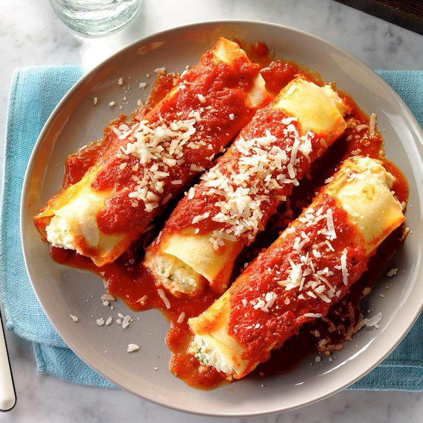
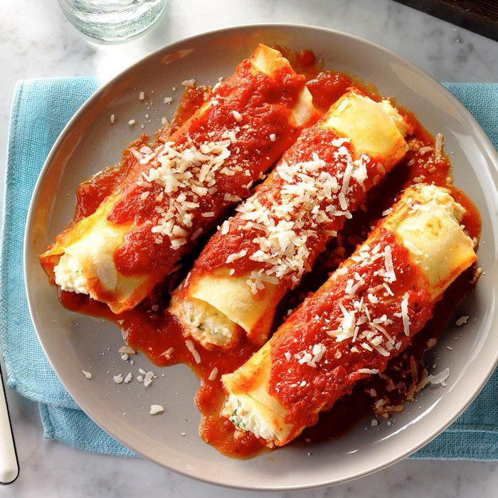

Homemade Manicotti
These tender manicotti are much easier to stuff than the purchased variety. People are always amazed when we say we make my own noodles. Learn how by following this recipe.
Fun Fact: Twilight Ristorante was featured on the Food Network's “Diners, Drive-Ins and Dives!""
Twilight Ristorante is one of a kind! We've been serving fine Italian food since 1965 thanks to you, our special guests! At Twilight Ristorante's, you can enjoy an intimate dinner for two or a large family feast. Throw a catered party in our Banquet Room or just stop by our lounge to watch a game. We boast a full bar, a diverse wine list, and special Italian desserts-all served in the friendly, neighborhood atmosphere of a family-owned establishment.
Our family cooking secrets have been handed down over the generations. The freshness shows in every preparation, whether Northern, Southern, or in between...it's just Italian! Everyone leaves satisfied—no one leaves hungry! We serve seafood, lamb, veal, steak, chicken, salads, sandwiches, pasta, and pizza, as well as prime rib Fridays through Sundays.


Homemade Manicotti
These tender manicotti are much easier to stuff than the purchased variety. People are always amazed when we say we make my own noodles. Learn how by following this recipe.
Interested in Making Pasta?
No matter your cooking level, making pasta is a great activity to do! Checkout this video that shows you how to make the best Homemade Pasta you'll ever eat!